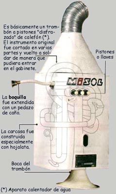
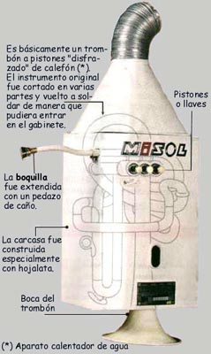

Es uno de los instrumentos que integran el Cuarteto (o Cuartito) de
baño. La primera versión de este instrumento, construido sobre la
base de un calefón de serpentín, era muy difícil de tocar y fue
utilizado solamente en la obra Visita a la Universidad de Wildstone.
Años más tarde, Hugo Domínguez perfeccionó el instrumento empleando
la tubería de un trombón a pistones. El trombón fue cortado en
varias partes y vuelto a soldar de manera que pudiera entrar en el
gabinete del calefón. El término "calefón" viene recogido en el
Diccionario de la Real Academia, y su significado es "aparato a
través de cuyo serpentín circula el agua que se calienta para uso
generalmente doméstico".
Ficha técnica
Nombre: Calephone
Categoría: Viento
Fecha de estreno: 9 de septiembre de 1977
Obra de estreno: Visita a la Universidad de Wildstone
 
